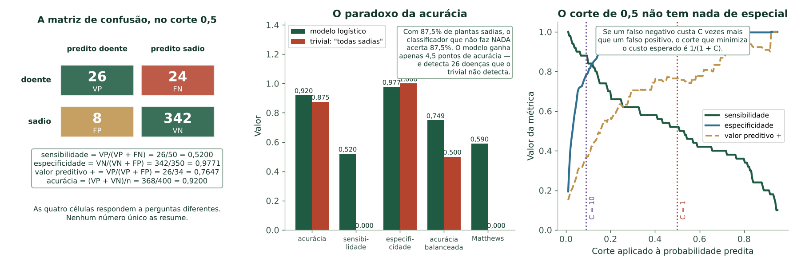
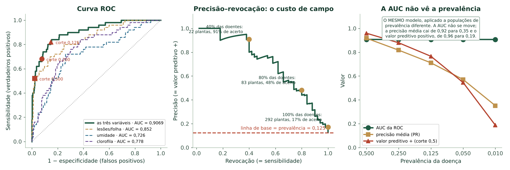

Métricas de classificação e curva ROC
Mede o desempenho de um classificador separando o que depende do corte do que depende apenas do ordenamento.
Comece por aqui
Um classificador produz, para cada unidade, um escore; a decisão vem depois, de um corte aplicado a esse escore. Separar essas duas coisas é o que organiza todo o assunto: métricas como a acurácia e a sensibilidade dependem do corte escolhido, enquanto a AUC e a precisão média descrevem o escore independentemente de qualquer corte. Confundir as duas famílias é a origem da maior parte dos erros de interpretação.
"De todas as plantas doentes, quantas o modelo encontrou?" é sensibilidade. "De todas as que ele apontou, quantas estavam realmente doentes?" é valor preditivo positivo. "Se eu arrancar as que ele aponta, quanto trabalho terei?" é a curva de precisão-revocação. Nenhuma das três é a acurácia, e nenhum número único substitui as três.
O que as métricas medem
A matriz de confusão cruza o que é verdade com o que foi predito e produz quatro contagens: verdadeiros positivos, falsos positivos, falsos negativos e verdadeiros negativos. Todas as métricas de corte fixo são razões entre essas quatro células — e cada uma escolhe um denominador diferente, o que é precisamente o que as distingue.

| Denominador | Métricas | Pergunta que responde |
|---|---|---|
| Linha dos doentes (VP+FN) | Sensibilidade, revocação | Dos que têm a doença, quantos encontrei? |
| Linha dos sadios (VN+FP) | Especificidade | Dos que não têm, quantos descartei corretamente? |
| Coluna dos preditos positivos (VP+FP) | VPP, precisão | Dos que apontei, quantos acertei? |
| Coluna dos preditos negativos (VN+FN) | VPN | Dos que liberei, quantos estavam realmente bem? |
| Total (n) | Acurácia | Em que fração das unidades acertei? |
Pressupostos e como verificá-los
| Pressuposto | Por que importa | Como verificar |
|---|---|---|
| Métricas calculadas em dados não usados no ajuste | Em resubstituição, tudo é otimista. | Use treino-teste ou validação cruzada. |
| Prevalência da amostra igual à da população | VPP e VPN dependem dela; sensibilidade e especificidade não. | Compare a prevalência amostral com a conhecida. |
| Classe positiva definida explicitamente | Inverter a classe inverte sensibilidade e especificidade. | No caret, declare positive =. |
| Custos dos dois erros declarados | O corte depende deles. | Se não forem declarados, 0,5 supõe custos iguais. |
| Escore contínuo, não só a classe predita | Sem escore não há ROC nem calibração. | Guarde as probabilidades, não apenas 0/1. |
| Corte escolhido fora dos dados de teste | Otimizar o corte no teste é uma escolha a validar. | Escolha o corte na validação; avalie no teste. |
| Observações independentes | ICs e bootstrap supõem independência. | Com medidas repetidas, reamostre o indivíduo. |
Sensibilidade e especificidade são propriedades do classificador: condicionam no estado verdadeiro e não mudam com a prevalência. VPP e VPN condicionam na predição e mudam fortemente com ela. Nos dados desta ficha, com a AUC praticamente fixa em 0,906, o VPP no corte 0,5 cai de 0,9594 com prevalência de 50% para 0,1877 com prevalência de 1%. Um modelo cujo VPP é aceitável em um ensaio com casos enriquecidos pode ser inútil em campo.
Formulação e cálculo
Em que:
- \(\text{VP}\)
- verdadeiros positivos: doentes classificados como doentes
- \(\text{FP}\)
- falsos positivos: sadios classificados como doentes
- \(\text{FN}\)
- falsos negativos: doentes classificados como sadios
- \(\text{VN}\)
- verdadeiros negativos: sadios classificados como sadios
- \(n\)
- total de unidades
- \(F_1\)
- média harmônica entre precisão e revocação
- \(\text{CCM}\)
- coeficiente de correlação de Matthews
A AUC e a sua interpretação
Em que:
- \(S_{+}\)
- escore de uma unidade positiva sorteada ao acaso
- \(S_{-}\)
- escore de uma unidade negativa sorteada ao acaso
- \(n_{+},n_{-}\)
- número de positivos e de negativos
- \(\mathbb{1}\{\cdot\}\)
- função indicadora
O corte ótimo sob custos assimétricos
Em que:
- \(C\)
- custo de um falso negativo em unidades de falso positivo
- \(k^{*}\)
- corte que minimiza o custo esperado
Exemplo numérico, passo a passo
| Predito doente | Predito sadio | Total | |
|---|---|---|---|
| Doente | VP = 26 | FN = 24 | 50 |
| Sadio | FP = 8 | VN = 342 | 350 |
| Total | 34 | 366 | 400 |
| Métrica | Conta | Valor |
|---|---|---|
| Acurácia | (26 + 342)/400 | 0,9200 |
| Sensibilidade | 26/(26 + 24) = 26/50 | 0,5200 |
| Especificidade | 342/(342 + 8) = 342/350 | 0,9771 |
| Valor preditivo positivo | 26/(26 + 8) = 26/34 | 0,7647 |
| Valor preditivo negativo | 342/(342 + 24) = 342/366 | 0,9344 |
| F1 | 2·26/(2·26 + 8 + 24) = 52/84 | 0,6190 |
| Acurácia balanceada | (0,5200 + 0,9771)/2 | 0,7486 |
| Coef. de Matthews | ver fórmula acima | 0,5895 |
| Métrica | Modelo | Trivial | Diferença |
|---|---|---|---|
| Acurácia | 0,9200 | 0,8750 | +0,0450 |
| Sensibilidade | 0,5200 | 0,0000 | +0,5200 |
| Especificidade | 0,9771 | 1,0000 | −0,0229 |
| Acurácia balanceada | 0,7486 | 0,5000 | +0,2486 |
| Coef. de Matthews | 0,5895 | 0,0000 | +0,5895 |
O classificador trivial não usa nenhuma informação, não exige nenhuma medição de campo, e acerta 87,5% das plantas — porque 87,5% delas estão sadias. O modelo o supera em apenas 4,5 pontos de acurácia, e no entanto detecta 26 das 50 plantas doentes, contra zero do trivial. A acurácia balanceada e o coeficiente de Matthews, que não se deixam dominar pela classe majoritária, mostram a diferença real: +0,2486 e +0,5895.
A regra prática que decorre disso: sempre que a prevalência se afastar de 50%, compare a acurácia do modelo com \(\max(p,1-p)\), a acurácia do trivial. Se o ganho for pequeno, a acurácia não está medindo nada de útil.
Propriedades
- Sensibilidade e especificidade não dependem da prevalência; VPP e VPN dependem fortemente.
- A AUC é invariante a transformações monótonas do escore e à prevalência.
- A AUC de um classificador aleatório é 0,5; a precisão média de um aleatório é a prevalência.
- \(F_1\) ignora os verdadeiros negativos; o coeficiente de Matthews usa as quatro células.
- O corte 0,5 minimiza o número de erros apenas quando os dois erros custam o mesmo.
- Sob custos \(C:1\), o corte que minimiza o custo esperado é \(1/(1+C)\).
- Calibração e discriminação são propriedades independentes: um modelo pode discriminar bem e ser mal calibrado.
Como interpretar os resultados
| Elemento | O que informa | Cuidado |
|---|---|---|
| Acurácia | Fração de acertos. | Enganosa com classes desequilibradas. |
| Sensibilidade | Capacidade de encontrar os positivos. | Sempre reporte com a especificidade. |
| Especificidade | Capacidade de descartar os negativos. | Alta é fácil quando os negativos são maioria. |
| VPP | Confiabilidade de um alerta positivo. | Depende da prevalência. |
| F1 | Equilíbrio entre precisão e revocação. | Ignora os verdadeiros negativos. |
| Coef. de Matthews | Métrica única robusta ao desequilíbrio. | Varia de −1 a +1; 0 é aleatório. |
| AUC | Qualidade do ORDENAMENTO. | Não vê a prevalência nem a calibração. |
| Precisão média (PR) | Custo prático de encontrar os positivos. | Base = prevalência, não 0,5. |
| Escore de Brier | Erro quadrático das probabilidades. | Mistura discriminação e calibração. |
| Curva de calibração | Se o escore 0,3 significa 30%. | Em resubstituição, é otimista por construção. |
Faixas de AUC, com a ressalva necessária
| AUC | Leitura usual |
|---|---|
| 0,50 | Sem discriminação: equivale a sortear. |
| 0,60 – 0,70 | Discriminação fraca. |
| 0,70 – 0,80 | Aceitável. |
| 0,80 – 0,90 | Boa. |
| > 0,90 | Excelente discriminação. |
Nos dados desta ficha a AUC é 0,9069 — "excelente" pela convenção. E no entanto, para encontrar todas as 50 plantas doentes é preciso inspecionar 292 das 400 plantas, com apenas 17% de acerto. A AUC é alta porque mede o ordenamento sobre todos os 17 500 pares doente-sadio, e o ordenamento de fato é bom; ela não mede o custo operacional de agir sobre esse ordenamento. Quando a classe de interesse é rara, a curva de precisão-revocação é a que responde à pergunta prática.
Como executar no R e em Python
Onde executar o código em Python
Não é preciso instalar nada: o Google Colab é um computador na nuvem, gratuito, que executa Python pelo navegador e já traz as bibliotecas usadas aqui (numpy, scipy e matplotlib).
Três pacotes cobrem o essencial. caret::confusionMatrix() devolve de uma vez a matriz, a acurácia com intervalo de confiança, a sensibilidade, a especificidade, o VPP, o VPN, a acurácia balanceada e o teste de McNemar — exige fatores e a declaração explícita de positive =. pROC::roc() constrói a curva ROC, e ci.auc() dá o intervalo de confiança da AUC pelo método de DeLong. PRROC::pr.curve() faz a curva de precisão-revocação, cuja linha de base é a prevalência. Para calibração, rms::val.prob() e CalibrationCurves::valProbggplot() produzem o gráfico completo.
library(pROC); library(caret)
mod <- glm(doente ~ lesoes + umidade + clorofila, data = plantas, family = binomial)
p <- fitted(mod)
confusionMatrix(factor(as.integer(p >= .5), levels = c(1,0)),
factor(plantas$doente, levels = c(1,0)), positive = "1")
roc(plantas$doente, p)
Exemplo de aplicação
Contexto dos dados
Os dados são fictícios e foram criados pelo autor: 400 cafeeiros avaliados para uma doença foliar, dos quais 50 estão doentes — prevalência de 12,5%. As três variáveis de campo são o número médio de lesões por folha, a umidade relativa no dossel (%) e o índice de clorofila. O escore de risco vem de uma regressão logística ajustada a esses mesmos dados. O desequilíbrio entre as classes é deliberado: é nele que as métricas de classificação se separam.
Código em R
# Métricas de classificação: exemplo completo ----
# Pacotes: pROC (ROC e AUC), PRROC (precisão-revocação), caret (matriz)
# Dados fictícios: 400 cafeeiros avaliados para doença foliar.
# O arquivo plantas.csv acompanha o site, na pasta scripts/.
plantas <- read.csv("plantas.csv")
str(plantas) # doente (0/1), lesoes, umidade, clorofila
table(plantas$doente)
mean(plantas$doente) # prevalência = 0,125
# O modelo: regressão logística com as três medidas
mod <- glm(doente ~ lesoes + umidade + clorofila,
data = plantas, family = binomial)
summary(mod)
p <- fitted(mod) # escore de risco de cada planta
# ---- 1. A matriz de confusão no corte 0,5
pred <- as.integer(p >= 0.5)
tab <- table(Real = plantas$doente, Predito = pred)
tab
library(caret)
confusionMatrix(factor(pred, levels = c(1, 0)),
factor(plantas$doente, levels = c(1, 0)),
positive = "1")
# A saída traz acurácia, sensibilidade, especificidade, VPP, VPN,
# acurácia balanceada e o teste de McNemar de uma só vez.
# ---- 2. As métricas, uma a uma, pela definição
vp <- sum(pred == 1 & plantas$doente == 1)
fp <- sum(pred == 1 & plantas$doente == 0)
fn <- sum(pred == 0 & plantas$doente == 1)
vn <- sum(pred == 0 & plantas$doente == 0)
c(VP = vp, FP = fp, FN = fn, VN = vn)
(vp + vn)/length(p) # acurácia
vp/(vp + fn) # sensibilidade (revocação)
vn/(vn + fp) # especificidade
vp/(vp + fp) # valor preditivo positivo (precisão)
vn/(vn + fn) # valor preditivo negativo
2*vp/(2*vp + fp + fn) # F1
(vp/(vp+fn) + vn/(vn+fp))/2 # acurácia balanceada
(vp*vn - fp*fn)/sqrt((vp+fp)*(vp+fn)*(vn+fp)*(vn+fn)) # Matthews
# ---- 3. O PARADOXO DA ACURÁCIA
mean(plantas$doente == 0) # acurácia do classificador trivial
# O trivial declara TODAS sadias: acurácia 0,875, sensibilidade 0.
# ---- 4. O corte não tem nada de especial: é decisão de custo
for (k in c(0.05, 0.10, 0.125, 0.20, 0.30, 0.40, 0.50, 0.70)) {
pr <- as.integer(p >= k)
v <- sum(pr == 1 & plantas$doente == 1); f <- sum(pr == 1 & plantas$doente == 0)
m <- sum(pr == 0 & plantas$doente == 1); n <- sum(pr == 0 & plantas$doente == 0)
cat(sprintf("corte %.3f: VP %3d FP %3d FN %3d sens %.4f VPP %.4f\n",
k, v, f, m, v/(v + m), v/(v + f)))
}
# Se um falso negativo custa C vezes um falso positivo, o corte que
# minimiza o custo ESPERADO é 1/(1 + C)
for (C in c(1, 2, 5, 10, 20, 50)) {
k <- 1/(1 + C); pr <- as.integer(p >= k)
custo <- C*sum(pr == 0 & plantas$doente == 1) +
sum(pr == 1 & plantas$doente == 0)
cat(sprintf("C = %2d: corte %.4f, custo %.1f\n", C, k, custo))
}
# ---- 5. Curva ROC e AUC
library(pROC)
r <- roc(plantas$doente, p)
r # AUC
auc(r); ci.auc(r) # IC por DeLong
plot(r, legacy.axes = TRUE, print.auc = TRUE,
xlab = "1 - especificidade", ylab = "Sensibilidade")
# A AUC é a probabilidade de uma doente receber escore maior que uma sadia
mean(outer(p[plantas$doente == 1], p[plantas$doente == 0], ">") +
0.5*outer(p[plantas$doente == 1], p[plantas$doente == 0], "=="))
# AUC de cada variável isolada, para comparar
for (v in c("lesoes", "umidade", "clorofila"))
cat(v, ":", auc(roc(plantas$doente, plantas[[v]], direction = "auto")), "\n")
# ---- 6. Curva de precisão-revocação: mais informativa com classe rara
library(PRROC)
pr <- pr.curve(scores.class0 = p[plantas$doente == 1],
scores.class1 = p[plantas$doente == 0], curve = TRUE)
pr$auc.davis.goadrich # precisão média
plot(pr)
# A linha de base da PR é a PREVALÊNCIA (0,125), não 0,5.
# ---- 7. CALIBRAÇÃO e escore de Brier
mean((p - plantas$doente)^2) # Brier do modelo
mean((mean(plantas$doente) - plantas$doente)^2) # Brier do trivial
1 - mean((p - plantas$doente)^2)/mean((mean(plantas$doente) - plantas$doente)^2)
fx <- cut(p, c(0, .05, .10, .20, .40, .70, 1.01), right = FALSE)
aggregate(cbind(escore = p, real = plantas$doente) ~ fx, FUN = mean)
# As duas colunas deveriam coincidir: é isso que calibração significa.
# ---- 8. Erro-padrão da AUC por bootstrap (escore FIXO)
library(boot)
set.seed(1)
b <- boot(data.frame(y = plantas$doente, s = p), R = 2000,
statistic = function(d, i) as.numeric(auc(roc(d$y[i], d$s[i],
quiet = TRUE))))
sd(b$t); boot.ci(b, type = "perc")
A mesma análise em Python, com os resultados
Cole o código em um notebook do Google Colab ↗ e execute com Shift+Enter. Os valores abaixo são a saída desse código.
# Bibliotecas: numpy e scipy (ambas já instaladas no Google Colab)
import numpy as np
from scipy import stats
# ===================================================================
# Dados fictícios, criados pelo autor: 400 plantas de um cafezal
# inspecionadas quanto a uma doença de solo. A coluna 1 é o diagnóstico
# confirmado em laboratório (1 = doente), e as três seguintes são
# medidas de campo: lesões por folha, umidade do dossel (%) e índice de
# clorofila. A doença é RARA: 50 das 400 plantas, ou 12,5%.
# Colunas: doente, lesoes, umidade, clorofila
# ===================================================================
PLANTAS = np.array([
[0,2.03,52.3,37], [0,4.25,66.8,39.8], [0,1.03,77.2,31.3], [0,1.62,72.9,34.6], [0,1.08,50.6,33],
[0,0.78,61.9,35.9], [0,1.97,70.5,44.7], [0,1.27,69.7,43], [0,1.67,63,30.6], [0,0.63,81.4,31.7],
[0,1.38,70.3,33.6], [0,2.36,71,36.5], [0,1.4,83,35.6], [0,1.48,61.8,25.2], [0,3.62,67.8,38.7],
[0,0.54,69.9,35.8], [0,1.38,70.1,32.5], [0,0.54,69.1,33.9], [0,0.28,78,43], [0,6.77,60.5,36.9],
[1,0.93,70.1,28.3], [0,0.58,68.9,34.4], [0,1.53,72.5,43.9], [0,2.22,71.4,38.9], [1,3.72,68,28.3],
[0,1.08,68.9,33.8], [0,1.92,59.7,38.1], [0,1.95,56.7,33], [0,0.61,62.1,34.2], [0,2.43,86.6,39.6],
[0,0.69,73.6,45.7], [0,1.32,70.4,40.6], [0,0.86,85.6,40.8], [0,1.85,75.9,33], [0,1.6,72.9,44.8],
[0,0.1,71.8,39.1], [0,2.62,61.9,43.9], [0,2.29,74.5,38.9], [1,2.21,66.8,25.1], [0,2.55,65.7,35.5],
[1,5.15,87.9,31.5], [1,1.55,78.3,33.1], [1,1.27,64.5,36.6], [0,2.6,70.3,42.6], [1,6.58,88.1,32.4],
[1,7.68,78.4,31.2], [1,4.45,76.7,23.4], [0,1.89,71.9,40.7], [0,1.48,77.3,33.2], [0,1.21,69.7,49.1],
[0,3.45,78.2,37.6], [0,2.2,84.1,45], [0,0.81,59.2,37.4], [0,3.06,61.2,36.3], [0,1.81,70.7,49.4],
[0,2.79,68,38.8], [0,0.39,64.5,43.1], [0,4.22,66.5,44], [0,3.65,71.2,31.1], [0,4.31,65.2,37.1],
[0,2.46,79.9,36.7], [0,1.19,83.5,30.4], [0,0.13,70.8,33.5], [0,1.67,60.2,34.1], [0,0.92,81.7,43.6],
[0,1.84,77.2,32.3], [0,0.92,63.2,38.7], [0,1.34,62.9,34.4], [0,2.06,67.2,36.9], [0,1.76,77.1,27.6],
[0,2.08,55.4,38.4], [0,1.2,66.5,39.5], [0,0.15,73.9,36.4], [0,1.08,57.8,32.3], [0,3.18,68.7,35.3],
[0,3.41,63.9,41.6], [0,1.82,61.1,47.5], [0,2.94,68.5,40.8], [0,3.43,80.9,40.3], [0,0.65,79.7,38.4],
[0,0.5,67.2,38], [0,2.72,83,41.8], [0,0.48,79.9,40.2], [1,1.85,87.8,28.2], [0,1.07,70.3,38],
[0,1.34,75.8,36.5], [0,1.99,79.3,44], [0,1.24,72.3,39.4], [0,0.21,78.4,33.9], [0,0.85,82,30.7],
[1,1.38,80.8,31.7], [0,0.83,75.1,46.1], [1,2.57,87.3,30.7], [0,3.14,69.3,35.1], [1,3.43,72.7,33.8],
[0,1.03,61.5,40.9], [0,2.04,77.4,26.9], [0,1.66,76.5,33.5], [1,4.26,77.8,22.1], [0,0.7,71.5,30.1],
[0,1.71,84.2,39.1], [0,1.88,74.4,40], [0,0.82,68,43.7], [0,1.25,61.6,40.4], [0,1.16,72.2,39.8],
[0,0.75,64.4,31.3], [0,1.95,98,40.4], [0,3.37,64,33.8], [0,1.38,75.6,38.4], [0,1.35,69.6,35.1],
[0,1.3,64.6,33.4], [0,3.96,69.9,37.6], [0,2.06,64.4,43.6], [0,1.47,69.4,43.7], [0,1.56,61.4,31.8],
[0,2.18,65.3,37.8], [0,2.58,61.7,34.9], [1,2.98,83.9,40.5], [0,3.5,74.9,37.3], [0,0.65,64.8,37.1],
[0,1.21,76.7,42.3], [0,1.24,66.3,41.4], [0,2.34,56.8,38.5], [0,1.05,78.7,35.5], [0,2.05,88.3,28.3],
[1,5.44,84.4,28.6], [0,1.31,79.3,34.1], [0,0.35,82,40.2], [0,2.13,68.9,39.7], [0,0.53,75.1,48.7],
[0,2.67,69.1,37.1], [0,0.52,70.9,42.4], [0,0.83,62.7,33.2], [0,0.97,72.2,33.3], [0,0.24,64.1,44.4],
[0,2.13,77.5,27.3], [0,4.59,73.6,35.7], [0,1.58,77.1,31.6], [0,0.06,66.6,43.3], [0,2.26,75.8,28.5],
[0,2.46,70.3,40.1], [0,0.9,73.7,40.1], [0,2.95,70.8,34.7], [0,0.7,54.3,28], [0,2,71,37.3],
[0,0.27,84.4,38.6], [0,1.72,82.2,37.1], [0,1.11,70,39.9], [0,1.18,68.5,40.4], [0,0.3,60.8,36.8],
[1,5.4,70.5,32.2], [0,1.51,77.6,21.4], [0,2.75,81.7,40], [0,0.91,76.4,44.1], [0,2.43,63.9,35.5],
[0,2.27,54.5,37], [0,0.5,83.9,36.5], [0,0.26,86.4,36], [0,1.24,91,21.6], [0,1.6,69.5,34.9],
[0,0.49,69.6,37.9], [0,1.7,93.3,47.2], [0,1.84,86.2,36.5], [0,0.44,67.2,48.1], [0,1.39,80.1,51.7],
[0,1.57,76.5,34], [0,0.21,82.8,44.3], [0,0.67,52,37], [0,0.99,74.9,28.4], [0,3.47,63.9,36.1],
[1,1.36,82.5,31.6], [0,0.28,66.9,33.3], [0,0.46,69.2,28.2], [0,3.24,71.5,44.2], [1,7.48,73.7,30.2],
[0,3.22,73.5,35.3], [0,1.13,69.7,36.5], [1,2.31,68.5,24], [0,0.52,72.4,34.4], [0,0.98,65,28.8],
[0,1.33,72.3,34.7], [0,2.36,71.8,38.2], [0,1.31,51.7,43.1], [0,2.43,73.6,32.3], [1,7.6,91.1,20.7],
[0,0.7,48.5,39.9], [0,1.34,78.8,33.7], [0,1.34,70.4,37.7], [0,0.81,70.8,37.5], [0,1.38,61.1,38.6],
[0,0.59,69.5,40.7], [0,0.78,82.3,36.9], [0,1.87,73.6,29.5], [0,1.37,76.3,36], [0,3.61,75.4,39.1],
[0,2.59,61.7,42.9], [0,0.48,56.1,42.1], [0,2.05,70.4,48], [0,1.28,67.9,40.2], [0,2.91,79.6,37.7],
[0,0.42,67.4,39.4], [0,0.04,72.9,41.3], [0,1.54,64.5,39.3], [0,3.85,56,28.8], [0,1.3,72.3,33.3],
[0,0.89,76.4,40.8], [0,0.43,66.3,41.1], [0,1.1,61,33.6], [0,0.44,65.1,46.8], [1,5.06,94.5,35.7],
[0,0.76,70.6,35.5], [1,4.26,60.1,21.7], [0,0.19,75.1,37.5], [0,0.93,71.7,39.6], [1,6.02,81.8,25.1],
[0,1.34,85.7,31.5], [0,0.78,79.3,43.1], [0,2.99,72,36.4], [0,1.25,69.5,34.6], [0,1.98,73.3,45.9],
[0,1.17,91.3,43.8], [1,7.56,80.9,29.8], [0,0.48,81.8,40.3], [1,9.54,76.8,29.2], [0,1.51,89.7,40.2],
[0,3.39,76.4,32.5], [0,0.97,65.3,46], [0,1.28,60.6,33.7], [0,1.06,78.4,37.2], [0,0.26,74.8,27.7],
[0,1.53,72.3,40.6], [0,3.46,71.2,38.5], [0,2.09,80.7,33.4], [0,1.38,75.4,47.9], [0,1.95,85.6,23.4],
[1,3.34,80.6,33.4], [1,5.09,83.1,37.1], [0,0.69,64.7,26.9], [0,1.1,83.8,39.5], [1,2.81,66.8,32.8],
[0,0.33,73.5,40.5], [0,0.86,64.5,33], [1,9.22,81,29.9], [0,8.14,70.8,31.3], [0,1.64,69.2,49.2],
[0,0.97,66.6,47.6], [0,3.9,77.5,37.9], [0,1.14,59.5,27.3], [0,2.86,67.9,44.9], [0,1.55,76.2,31.6],
[0,1.32,74.5,38.6], [0,0.32,80.4,35.1], [0,1.46,78.5,30.3], [0,3.1,67.3,31.5], [1,1.2,76.8,40.8],
[1,3.69,78,38.8], [0,0.53,88,43.5], [0,1.45,71.1,47], [0,0.39,71.7,38.9], [0,3.25,69.5,35.6],
[0,2.01,57.2,38.6], [0,2.42,70.6,42.5], [0,0.12,77.5,37.7], [0,1.1,89.4,41.4], [0,2.09,65,35.2],
[1,2.82,62.4,35.5], [0,1.3,79.9,43.2], [0,0.73,77,40.3], [0,2.18,72.9,36.8], [0,0.64,78.7,39.2],
[0,1.05,61.3,34.9], [0,2.38,54,28.5], [0,2.64,58.9,40.7], [1,2.26,95.9,44], [0,2.05,57.2,37.9],
[0,1.56,70,35.7], [0,2.09,74,31.8], [0,3.34,79.9,37.2], [0,1.01,77.6,39.4], [0,1.04,75.5,37.3],
[0,1.84,71.8,43.7], [0,1.31,88,43.3], [0,0.91,69.5,38.9], [0,0.7,67.1,30.2], [0,0.27,64.9,35.6],
[0,1.94,71.6,37.6], [0,1.19,64.9,43.2], [0,5.19,75.3,45.6], [1,2.19,85.4,34.8], [0,0.93,62.5,36.1],
[0,0.41,86.8,31.5], [0,0.64,81.6,37.3], [0,1.61,73.1,36.4], [0,1.73,42.2,44.1], [0,1.66,72.6,35.4],
[0,3.67,60.6,37.7], [1,4.02,77,29.5], [0,1.43,64.2,33.7], [0,0.98,81,45.8], [0,1.21,68.8,34.9],
[0,0.7,80.5,43.7], [0,4.09,68,38.6], [0,1.51,65.6,33.9], [0,1.3,75,34.2], [1,4.77,91.5,34.7],
[1,5.26,81.7,39.8], [0,3.76,65.9,44.6], [0,0.36,84.2,25.9], [0,1.01,74.3,38.2], [0,0.38,70.1,35.4],
[0,0.9,85.7,41.4], [0,3.34,80.1,46.8], [0,4.12,71.9,38], [0,0.41,52.9,34.5], [1,7.18,77.5,32.9],
[1,2.95,80.7,34.2], [0,1.66,56.8,39.7], [0,0.97,58.3,32.4], [0,2.15,82.9,36.5], [0,1.04,69.5,38.6],
[0,2.32,65.3,42.7], [0,1.08,91.9,38.1], [0,0.3,71.4,31], [0,0.78,75.2,34.6], [0,1.86,85.6,43.6],
[1,9.2,89.8,34.5], [1,1.65,63,33.3], [0,1.09,60.5,35.4], [1,0.97,65.9,30], [0,0.57,69.3,34.2],
[0,1.1,64.1,35.1], [0,2.3,69,36.2], [0,2.33,74.3,38.6], [0,1.81,69.5,37.7], [0,2.65,65,35.7],
[0,1.75,73.9,39.7], [0,2.44,74.1,36.8], [1,4.64,91.6,39.3], [0,2.62,70.5,27.1], [0,1.13,73.9,37],
[0,1.39,78.1,36.6], [0,3.49,61.5,27.6], [1,9.11,73.1,35.6], [0,1.85,72.3,42.2], [0,4.46,84.5,30.8],
[0,0.33,61.4,44.1], [0,2.24,63.4,40.1], [0,2.07,71.9,36.5], [0,1.39,60.5,43.1], [0,2.26,68.8,48.7],
[0,4.19,61.1,38.8], [1,4.04,91.5,32.5], [0,2.27,81,37.9], [0,0.67,76.5,34.6], [0,1.25,73.4,45.8],
[0,2.52,67.9,34.1], [0,1.79,72.2,48.8], [0,0.39,83.4,45.6], [0,1.24,45.5,30.7], [0,0.9,75.7,41.6],
[0,1.44,71.2,38.9], [0,1.28,88.7,38.5], [0,0.98,67.1,37.6], [0,2.02,60.3,30.1], [0,1.92,72.9,30.4],
[0,1.86,66.2,38.1], [0,0.48,80.6,43.6], [1,1.8,82.7,35.2], [0,4.23,76.4,28.8], [0,3.46,93.6,32.6],
[1,4.9,86.7,29.8], [0,4.09,73.3,35.3], [0,1.66,72.3,36.4], [0,0.46,65.4,31.9], [0,1.14,78,32.2],
[0,3.77,90.7,31.6], [0,0.1,60.3,32.4], [0,0.47,69.6,41], [0,2.26,87.9,30.8], [0,0.65,69.1,34.6],
[0,0.38,68.9,36.7], [1,4.99,80.3,26.5], [0,1.2,58,41.3], [0,2.04,76.7,35.3], [0,2.94,86.7,36.2],
[0,6.38,57.8,24.8], [0,1.05,72.1,41.7], [1,5.21,78.1,32.6], [0,0.87,82.9,29.2], [0,0.22,63.7,48.9],
[0,2.54,74.3,29.3], [0,0.43,78.2,45], [0,2.71,71.6,31.3], [0,1.01,71.2,37.4], [0,0.26,88.1,42.8],
[0,2.01,72.2,30], [0,0.41,89.7,32.6], [0,1.05,80.2,44], [0,2.84,71.6,37], [0,1.1,71.4,37.8]])
yv = PLANTAS[:, 0].astype(int); Xc = PLANTAS[:, 1:]
nc = len(yv)
def irls(X, yy, iters=60):
"""Regressão logística por mínimos quadrados reponderados."""
b = np.zeros(X.shape[1])
for _ in range(iters):
p = 1/(1 + np.exp(-X @ b)); W = p*(1-p)
b = b + np.linalg.solve(X.T @ (X*W[:, None]) + 1e-9*np.eye(X.shape[1]),
X.T @ (yy - p))
return b
def matriz(yy, pred):
vp = int(np.sum((pred == 1) & (yy == 1))); fp = int(np.sum((pred == 1) & (yy == 0)))
fn = int(np.sum((pred == 0) & (yy == 1))); vn = int(np.sum((pred == 0) & (yy == 0)))
return vp, fp, fn, vn
def metricas(yy, pred):
vp, fp, fn, vn = matriz(yy, pred); N = vp+fp+fn+vn
sens = vp/max(vp+fn, 1); espe = vn/max(vn+fp, 1)
vpp = vp/max(vp+fp, 1); vpn = vn/max(vn+fn, 1)
return dict(acuracia=(vp+vn)/N, sensibilidade=sens, especificidade=espe,
vpp=vpp, vpn=vpn, f1=2*vp/max(2*vp+fp+fn, 1),
balanceada=(sens+espe)/2,
mcc=((vp*vn - fp*fn) /
np.sqrt(max((vp+fp)*(vp+fn)*(vn+fp)*(vn+fn), 1))))
def roc(yy, sc):
o = np.argsort(-sc); yo = yy[o]; so = sc[o]
P = yy.sum(); Nn = len(yy) - P
tpr = np.r_[0, np.cumsum(yo)/P]; fpr = np.r_[0, np.cumsum(1-yo)/Nn]
cortes = np.r_[np.inf, so]
return fpr, tpr, cortes
def auc_rank(yy, sc):
r = stats.rankdata(sc); n1 = yy.sum(); n0 = len(yy) - n1
return (r[yy == 1].sum() - n1*(n1+1)/2)/(n1*n0)
X = np.column_stack([np.ones(nc), Xc])
b = irls(X, yv)
p = 1/(1 + np.exp(-X @ b))
nomes = ["intercepto", "lesões/folha", "umidade", "clorofila"]
print(f"{nc} plantas, {int(yv.sum())} doentes ({100*yv.mean():.1f}%)")
print("Modelo: regressão logística com as três medidas de campo.")
print("\nCoeficientes")
for j, nm in enumerate(nomes):
print(f" {nm:<16}{b[j]:>10.4f}")
# ===================================================================
# PARTE 1 - a matriz de confusão e o paradoxo da acurácia
# ===================================================================
print("\n" + "=" * 70)
print("Com o corte usual de 0,5")
pred = (p >= 0.5).astype(int)
vp, fp, fn, vn = matriz(yv, pred)
print(f"\n{'':>18}{'predito doente':>18}{'predito sadio':>16}{'total':>9}")
print(f"{'doente':>18}{vp:>18d}{fn:>16d}{vp+fn:>9d}")
print(f"{'sadio':>18}{fp:>18d}{vn:>16d}{fp+vn:>9d}")
print(f"{'total':>18}{vp+fp:>18d}{fn+vn:>16d}{nc:>9d}")
m = metricas(yv, pred)
print(f"\n{'métrica':<22}{'valor':>9}{'fórmula':<30}")
for rot, ch, fo in [("acurácia","acuracia","(VP + VN)/n"),
("sensibilidade","sensibilidade","VP/(VP + FN)"),
("especificidade","especificidade","VN/(VN + FP)"),
("valor preditivo +","vpp","VP/(VP + FP)"),
("valor preditivo −","vpn","VP N/(VN + FN)".replace("VP N","VN")),
("F1","f1","2VP/(2VP + FP + FN)"),
("acurácia balanceada","balanceada","(sens + espec)/2"),
("coef. de Matthews","mcc","ver fórmula na ficha")]:
print(f"{rot:<22}{m[ch]:>9.4f} {fo:<30}")
print("\nO PARADOXO DA ACURÁCIA")
triv = metricas(yv, np.zeros(nc, int))
print(f" acurácia do modelo = {m['acuracia']:.4f}")
print(f" acurácia do classificador TRIVIAL = {triv['acuracia']:.4f}")
print(f" (aquele que declara TODAS as plantas sadias)")
print(f" ganho do modelo sobre o trivial = "
f"{m['acuracia']-triv['acuracia']:+.4f}")
print(f"\n sensibilidade do modelo = {m['sensibilidade']:.4f} "
f"(deixa de detectar {fn} das {vp+fn} plantas doentes)")
print(f" sensibilidade do trivial = {triv['sensibilidade']:.4f}")
print(f" acurácia balanceada: modelo {m['balanceada']:.4f} | "
f"trivial {triv['balanceada']:.4f}")
print(f" coef. de Matthews: modelo {m['mcc']:.4f} | trivial {triv['mcc']:.4f}")
print("\nCom 87,5% das plantas sadias, a acurácia é dominada pela classe")
print("majoritária. O modelo supera o trivial em apenas 4,5 pontos de")
print("acurácia, e no entanto detecta mais da metade das plantas doentes,")
print("que o trivial não detecta nenhuma. Em dados desequilibrados, a")
print("acurácia é a pior métrica possível.")
# ===================================================================
# PARTE 2 - o corte não é 0,5
# ===================================================================
print("\n" + "=" * 70)
print("O corte de 0,5 não tem nada de especial: ele minimiza o número de")
print("erros SUPONDO que um falso negativo custa o mesmo que um falso positivo.")
print(f"\n{'corte':>7}{'VP':>5}{'FP':>5}{'FN':>5}{'VN':>5}{'acur.':>8}"
f"{'sens.':>8}{'espec.':>8}{'VPP':>8}{'F1':>8}")
for t in [0.05, 0.10, 0.125, 0.20, 0.30, 0.40, 0.50, 0.70]:
pr = (p >= t).astype(int); a, bq, c, d = matriz(yv, pr); mm = metricas(yv, pr)
print(f"{t:>7.3f}{a:>5d}{bq:>5d}{c:>5d}{d:>5d}{mm['acuracia']:>8.4f}"
f"{mm['sensibilidade']:>8.4f}{mm['especificidade']:>8.4f}"
f"{mm['vpp']:>8.4f}{mm['f1']:>8.4f}")
print("\nA escolha do corte é uma decisão de CUSTO, não estatística.")
print("Suponha que deixar passar uma planta doente custe C vezes mais que")
print("arrancar uma sadia. O corte que minimiza o custo esperado é 1/(1 + C).")
print(f"\n{'C (custo FN / custo FP)':<26}{'corte ótimo':>13}{'custo total':>14}"
f"{'FN':>6}{'FP':>6}")
for C in [1, 2, 5, 10, 20, 50]:
tc = 1/(1 + C)
pr = (p >= tc).astype(int); a, bq, c, d = matriz(yv, pr)
print(f"{C:<26}{tc:>13.4f}{C*c + bq:>14.1f}{c:>6d}{bq:>6d}")
print("\nCom C = 10 - um falso negativo custa dez arranquios desnecessários -")
print("o corte ótimo é 0,091 e o modelo deixa de detectar 6 plantas doentes")
print("em vez de 24. O número de falsos positivos sobe de 8 para 76, e é esse")
print("o preço explícito da decisão: trocam-se 18 doenças não detectadas por")
print("68 plantas sadias arrancadas.")
# verificação empírica de que 1/(1+C) é ótimo
print("\nA fórmula 1/(1 + C) minimiza o custo ESPERADO, na população. Em uma")
print("amostra finita, o corte que minimiza o custo OBSERVADO flutua em torno")
print("dela. A tabela compara os dois:")
grade = np.linspace(0.005, 0.95, 400)
print(f"\n{'C':>4}{'corte teórico':>15}{'custo nele':>12}"
f"{'melhor corte':>14}{'menor custo':>13}{'perda':>8}")
for C in [1, 2, 5, 10, 20]:
custos = np.array([C*matriz(yv, (p >= t).astype(int))[2] +
matriz(yv, (p >= t).astype(int))[1] for t in grade])
tt = 1/(1+C)
ct = C*matriz(yv, (p >= tt).astype(int))[2] + matriz(yv, (p >= tt).astype(int))[1]
j = int(np.argmin(custos))
print(f"{C:>4}{tt:>15.4f}{ct:>12.1f}{grade[j]:>14.4f}{custos[j]:>13.1f}"
f"{ct-custos[j]:>8.1f}")
print("O corte teórico custa de 2 a 28 unidades a mais que o melhor corte")
print("empírico - entre 1% e 13% do custo total, e a diferença vem do ruído")
print("amostral, não de a fórmula estar errada. Otimizar o corte NOS MESMOS")
print("DADOS, por outro lado, é uma")
print("escolha a mais feita olhando o teste, e precisa entrar na validação.")
# ===================================================================
# PARTE 3 - a curva ROC e a AUC
# ===================================================================
print("\n" + "=" * 70)
fpr, tpr, cortes = roc(yv, p)
auc = auc_rank(yv, p)
print(f"Curva ROC: a AUC é {auc:.4f}")
print("\nA AUC tem uma interpretação direta: é a probabilidade de que uma")
print("planta doente sorteada ao acaso receba escore MAIOR que uma planta")
print("sadia sorteada ao acaso.")
rng = np.random.default_rng(3)
d_ = p[yv == 1]; s_ = p[yv == 0]
sorteios = (d_[rng.integers(0, len(d_), 500000)] >
s_[rng.integers(0, len(s_), 500000)])
print(f" verificação por sorteio (500.000 pares): "
f"{sorteios.mean():.4f} contra AUC = {auc:.4f}")
print(f"\n pares concordantes de {len(d_)}x{len(s_)} = {len(d_)*len(s_)} possíveis")
print("\nAlguns pontos da curva")
print(f"{'corte':>8}{'FPR (1 − espec.)':>20}{'TPR (sensibilidade)':>22}")
for t in [0.70, 0.50, 0.30, 0.20, 0.125, 0.05]:
pr = (p >= t).astype(int); a, bq, c, d = matriz(yv, pr)
print(f"{t:>8.3f}{bq/(bq+d):>20.4f}{a/(a+c):>22.4f}")
print("\nA AUC de modelos com uma variável só, para comparar")
for j, nm in enumerate(["lesões/folha", "umidade", "clorofila"]):
s1 = Xc[:, j] if j != 2 else -Xc[:, j]
print(f" {nm:<16}AUC = {auc_rank(yv, s1):.4f}")
print(f" {'as três juntas':<16}AUC = {auc:.4f}")
print("\nO ERRO-PADRÃO da AUC, por bootstrap das plantas")
rng = np.random.default_rng(5)
bs = []
for _ in range(4000):
i2 = rng.integers(0, nc, nc)
if yv[i2].sum() in (0, len(i2)): continue
bs.append(auc_rank(yv[i2], p[i2])) # escore fixo, plantas reamostradas
bs = np.array(bs)
print(f" AUC = {auc:.4f} | EP = {bs.std(ddof=1):.4f} | "
f"IC 95% = [{np.percentile(bs,2.5):.4f}; {np.percentile(bs,97.5):.4f}]")
print(" (reamostram-se as plantas com o escore FIXO; o intervalo mede a")
print(" precisão da AUC como estatística, e é otimista como medida de")
print(" desempenho, porque o modelo foi ajustado nas mesmas plantas)")
# ===================================================================
# PARTE 4 - quando a ROC engana: a curva de precisão-revocação
# ===================================================================
print("\n" + "=" * 70)
print("Com classes muito desequilibradas, a ROC pode parecer excelente e o")
print("classificador ser inútil na prática. A razão está no eixo horizontal:")
print("a taxa de falsos positivos tem no DENOMINADOR a classe majoritária.")
o = np.argsort(-p); yo = yv[o]
vpc = np.cumsum(yo); k = np.arange(1, nc+1)
prec = vpc/k; rev = vpc/yv.sum()
ap = float(np.sum(np.diff(np.r_[0, rev])*prec))
print(f"\n AUC da ROC = {auc:.4f}")
print(f" precisão média (área sob a PR) = {ap:.4f}")
print(f" linha de base da PR = prevalência = {yv.mean():.4f}")
print(f" linha de base da ROC = 0,5000")
print("\nA ROC tem base 0,5 qualquer que seja a prevalência; a curva de")
print("precisão-revocação tem base igual à prevalência, 0,125 aqui. Por isso")
print("a segunda é mais informativa quando a classe de interesse é rara.")
print(f"\n{'revocação':>12}{'precisão':>11}{'plantas inspecionadas':>25}")
for r_ in [0.2, 0.4, 0.6, 0.8, 0.9, 1.0]:
i = int(np.argmax(rev >= r_ - 1e-9))
print(f"{rev[i]:>12.4f}{prec[i]:>11.4f}{i+1:>25d}")
print("\nLeitura prática: para encontrar 40% das plantas doentes basta")
print("inspecionar 22 das 400, e 91% delas estarão realmente doentes. Para")
print("chegar a 80%, são 83 plantas, com 48% de acerto. E para encontrar")
print("TODAS, é preciso inspecionar 292 - três quartos do cafezal, com apenas")
print("17% de acerto. É essa curva, e não a AUC, que informa o custo da")
print("operação de campo.")
print("\nA mesma AUC, prevalências diferentes: o que muda")
rng = np.random.default_rng(8)
print(f"{'prevalência':>12}{'AUC':>9}{'precisão média':>17}"
f"{'VPP no corte 0,5':>19}")
for alvo in [0.50, 0.25, 0.125, 0.05, 0.01]:
# subamostra os sadios para atingir a prevalência alvo
idx_d = np.where(yv == 1)[0]; idx_s = np.where(yv == 0)[0]
ns = int(round(len(idx_d)*(1-alvo)/alvo))
aucs, aps, vpps = [], [], []
for _ in range(200):
sel = np.r_[idx_d, rng.choice(idx_s, ns, replace=True)]
ys = yv[sel]; ps = p[sel]
aucs.append(auc_rank(ys, ps))
oo = np.argsort(-ps); yoo = ys[oo]
vc = np.cumsum(yoo); kk = np.arange(1, len(ys)+1)
pr_ = vc/kk; rv = vc/ys.sum()
aps.append(float(np.sum(np.diff(np.r_[0, rv])*pr_)))
vpps.append(metricas(ys, (ps >= 0.5).astype(int))['vpp'])
print(f"{alvo:>12.3f}{np.mean(aucs):>9.4f}{np.mean(aps):>17.4f}"
f"{np.mean(vpps):>19.4f}")
print("\nA AUC praticamente NÃO MUDA com a prevalência - é uma propriedade do")
print("ordenamento. A precisão média e o valor preditivo positivo DESABAM.")
print("Reportar só a AUC em um problema de classe rara esconde o que importa.")
# ===================================================================
# PARTE 5 - calibração: o escore é uma probabilidade?
# ===================================================================
print("\n" + "=" * 70)
print("A AUC mede o ORDENAMENTO; ela não diz se o escore 0,30 corresponde a")
print("uma chance real de 30%. Isso é CALIBRAÇÃO, e se verifica à parte.")
brier = float(np.mean((p - yv)**2))
brier_triv = float(np.mean((yv.mean() - yv)**2))
print(f"\n escore de Brier do modelo = {brier:.4f}")
print(f" escore de Brier do trivial (p̄) = {brier_triv:.4f}")
print(f" escore de habilidade de Brier = {1 - brier/brier_triv:.4f}")
print("\nCurva de calibração por faixas de escore")
faixas = [(0,0.05),(0.05,0.10),(0.10,0.20),(0.20,0.40),(0.40,0.70),(0.70,1.01)]
print(f"{'faixa de escore':>18}{'n':>6}{'escore médio':>15}"
f"{'frequência real':>18}")
for lo, hi in faixas:
m_ = (p >= lo) & (p < hi)
if m_.sum() == 0: continue
print(f"{f'[{lo:.2f}; {hi:.2f})':>18}{int(m_.sum()):>6}"
f"{p[m_].mean():>15.4f}{yv[m_].mean():>18.4f}")
print("\nAs duas últimas colunas deveriam coincidir. Aqui coincidem bem, como")
print("é de esperar de uma regressão logística ajustada nos próprios dados -")
print("ela é calibrada por construção na amostra de ajuste. Em dados novos, e")
print("sobretudo em modelos de aprendizado de máquina, a calibração precisa")
print("ser verificada e muitas vezes corrigida.")
Resultados da execução
400 plantas, 50 doentes (12.5%)
Modelo: regressão logística com as três medidas de campo.
Coeficientes
intercepto -5.1611
lesões/folha 0.7653
umidade 0.0889
clorofila -0.1574
======================================================================
Com o corte usual de 0,5
predito doente predito sadio total
doente 26 24 50
sadio 8 342 350
total 34 366 400
métrica valorfórmula
acurácia 0.9200 (VP + VN)/n
sensibilidade 0.5200 VP/(VP + FN)
especificidade 0.9771 VN/(VN + FP)
valor preditivo + 0.7647 VP/(VP + FP)
valor preditivo − 0.9344 VN/(VN + FN)
F1 0.6190 2VP/(2VP + FP + FN)
acurácia balanceada 0.7486 (sens + espec)/2
coef. de Matthews 0.5895 ver fórmula na ficha
O PARADOXO DA ACURÁCIA
acurácia do modelo = 0.9200
acurácia do classificador TRIVIAL = 0.8750
(aquele que declara TODAS as plantas sadias)
ganho do modelo sobre o trivial = +0.0450
sensibilidade do modelo = 0.5200 (deixa de detectar 24 das 50 plantas doentes)
sensibilidade do trivial = 0.0000
acurácia balanceada: modelo 0.7486 | trivial 0.5000
coef. de Matthews: modelo 0.5895 | trivial 0.0000
Com 87,5% das plantas sadias, a acurácia é dominada pela classe
majoritária. O modelo supera o trivial em apenas 4,5 pontos de
acurácia, e no entanto detecta mais da metade das plantas doentes,
que o trivial não detecta nenhuma. Em dados desequilibrados, a
acurácia é a pior métrica possível.
======================================================================
O corte de 0,5 não tem nada de especial: ele minimiza o número de
erros SUPONDO que um falso negativo custa o mesmo que um falso positivo.
corte VP FP FN VN acur. sens. espec. VPP F1
0.050 45 112 5 238 0.7075 0.9000 0.6800 0.2866 0.4348
0.100 42 70 8 280 0.8050 0.8400 0.8000 0.3750 0.5185
0.125 41 52 9 298 0.8475 0.8200 0.8514 0.4409 0.5734
0.200 34 27 16 323 0.8925 0.6800 0.9229 0.5574 0.6126
0.300 31 13 19 337 0.9200 0.6200 0.9629 0.7045 0.6596
0.400 29 9 21 341 0.9250 0.5800 0.9743 0.7632 0.6591
0.500 26 8 24 342 0.9200 0.5200 0.9771 0.7647 0.6190
0.700 20 3 30 347 0.9175 0.4000 0.9914 0.8696 0.5479
A escolha do corte é uma decisão de CUSTO, não estatística.
Suponha que deixar passar uma planta doente custe C vezes mais que
arrancar uma sadia. O corte que minimiza o custo esperado é 1/(1 + C).
C (custo FN / custo FP) corte ótimo custo total FN FP
1 0.5000 32.0 24 8
2 0.3333 54.0 21 12
5 0.1667 97.0 13 32
10 0.0909 136.0 6 76
20 0.0476 223.0 5 123
50 0.0196 258.0 1 208
Com C = 10 - um falso negativo custa dez arranquios desnecessários -
o corte ótimo é 0,091 e o modelo deixa de detectar 6 plantas doentes
em vez de 24. O número de falsos positivos sobe de 8 para 76, e é esse
o preço explícito da decisão: trocam-se 18 doenças não detectadas por
68 plantas sadias arrancadas.
A fórmula 1/(1 + C) minimiza o custo ESPERADO, na população. Em uma
amostra finita, o corte que minimiza o custo OBSERVADO flutua em torno
dela. A tabela compara os dois:
C corte teórico custo nele melhor corte menor custo perda
1 0.5000 32.0 0.4005 30.0 2.0
2 0.3333 54.0 0.3271 50.0 4.0
5 0.1667 97.0 0.1211 94.0 3.0
10 0.0909 136.0 0.1211 134.0 2.0
20 0.0476 223.0 0.0950 195.0 28.0
O corte teórico custa de 2 a 28 unidades a mais que o melhor corte
empírico - entre 1% e 13% do custo total, e a diferença vem do ruído
amostral, não de a fórmula estar errada. Otimizar o corte NOS MESMOS
DADOS, por outro lado, é uma
escolha a mais feita olhando o teste, e precisa entrar na validação.
======================================================================
Curva ROC: a AUC é 0.9069
A AUC tem uma interpretação direta: é a probabilidade de que uma
planta doente sorteada ao acaso receba escore MAIOR que uma planta
sadia sorteada ao acaso.
verificação por sorteio (500.000 pares): 0.9071 contra AUC = 0.9069
pares concordantes de 50x350 = 17500 possíveis
Alguns pontos da curva
corte FPR (1 − espec.) TPR (sensibilidade)
0.700 0.0086 0.4000
0.500 0.0229 0.5200
0.300 0.0371 0.6200
0.200 0.0771 0.6800
0.125 0.1486 0.8200
0.050 0.3200 0.9000
A AUC de modelos com uma variável só, para comparar
lesões/folha AUC = 0.8523
umidade AUC = 0.7265
clorofila AUC = 0.7778
as três juntas AUC = 0.9069
O ERRO-PADRÃO da AUC, por bootstrap das plantas
AUC = 0.9069 | EP = 0.0240 | IC 95% = [0.8561; 0.9508]
(reamostram-se as plantas com o escore FIXO; o intervalo mede a
precisão da AUC como estatística, e é otimista como medida de
desempenho, porque o modelo foi ajustado nas mesmas plantas)
======================================================================
Com classes muito desequilibradas, a ROC pode parecer excelente e o
classificador ser inútil na prática. A razão está no eixo horizontal:
a taxa de falsos positivos tem no DENOMINADOR a classe majoritária.
AUC da ROC = 0.9069
precisão média (área sob a PR) = 0.7115
linha de base da PR = prevalência = 0.1250
linha de base da ROC = 0,5000
A ROC tem base 0,5 qualquer que seja a prevalência; a curva de
precisão-revocação tem base igual à prevalência, 0,125 aqui. Por isso
a segunda é mais informativa quando a classe de interesse é rara.
revocação precisão plantas inspecionadas
0.2000 0.9091 11
0.4000 0.9091 22
0.6000 0.7143 42
0.8000 0.4819 83
0.9000 0.3169 142
1.0000 0.1712 292
Leitura prática: para encontrar 40% das plantas doentes basta
inspecionar 22 das 400, e 91% delas estarão realmente doentes. Para
chegar a 80%, são 83 plantas, com 48% de acerto. E para encontrar
TODAS, é preciso inspecionar 292 - três quartos do cafezal, com apenas
17% de acerto. É essa curva, e não a AUC, que informa o custo da
operação de campo.
A mesma AUC, prevalências diferentes: o que muda
prevalência AUC precisão média VPP no corte 0,5
0.500 0.9072 0.9173 0.9594
0.250 0.9063 0.8173 0.8792
0.125 0.9061 0.7112 0.7660
0.050 0.9068 0.5709 0.5460
0.010 0.9067 0.3517 0.1877
A AUC praticamente NÃO MUDA com a prevalência - é uma propriedade do
ordenamento. A precisão média e o valor preditivo positivo DESABAM.
Reportar só a AUC em um problema de classe rara esconde o que importa.
======================================================================
A AUC mede o ORDENAMENTO; ela não diz se o escore 0,30 corresponde a
uma chance real de 30%. Isso é CALIBRAÇÃO, e se verifica à parte.
escore de Brier do modelo = 0.0618
escore de Brier do trivial (p̄) = 0.1094
escore de habilidade de Brier = 0.4353
Curva de calibração por faixas de escore
faixa de escore n escore médio frequência real
[0.00; 0.05) 243 0.0202 0.0206
[0.05; 0.10) 45 0.0743 0.0667
[0.10; 0.20) 51 0.1379 0.1569
[0.20; 0.40) 23 0.2741 0.2174
[0.40; 0.70) 15 0.5518 0.6000
[0.70; 1.01) 23 0.8756 0.8696
As duas últimas colunas deveriam coincidir. Aqui coincidem bem, como
é de esperar de uma regressão logística ajustada nos próprios dados -
ela é calibrada por construção na amostra de ajuste. Em dados novos, e
sobretudo em modelos de aprendizado de máquina, a calibração precisa
ser verificada e muitas vezes corrigida.
| Corte | VP | FP | FN | Acurácia | Sensib. | Especif. | VPP | F1 |
|---|---|---|---|---|---|---|---|---|
| 0,050 | 45 | 112 | 5 | 0,7075 | 0,9000 | 0,6800 | 0,2866 | 0,4348 |
| 0,100 | 42 | 70 | 8 | 0,8050 | 0,8400 | 0,8000 | 0,3750 | 0,5185 |
| 0,125 | 41 | 52 | 9 | 0,8475 | 0,8200 | 0,8514 | 0,4409 | 0,5734 |
| 0,200 | 34 | 27 | 16 | 0,8925 | 0,6800 | 0,9229 | 0,5574 | 0,6126 |
| 0,300 | 31 | 13 | 19 | 0,9200 | 0,6200 | 0,9629 | 0,7045 | 0,6596 |
| 0,400 | 29 | 9 | 21 | 0,9250 | 0,5800 | 0,9743 | 0,7632 | 0,6591 |
| 0,500 | 26 | 8 | 24 | 0,9200 | 0,5200 | 0,9771 | 0,7647 | 0,6190 |
| 0,700 | 20 | 3 | 30 | 0,9175 | 0,4000 | 0,9914 | 0,8696 | 0,5479 |
| C = custo FN / custo FP | Corte 1/(1+C) | Custo total | FN | FP |
|---|---|---|---|---|
| 1 | 0,5000 | 32,0 | 24 | 8 |
| 2 | 0,3333 | 54,0 | 21 | 12 |
| 5 | 0,1667 | 97,0 | 13 | 32 |
| 10 | 0,0909 | 136,0 | 6 | 76 |
| 20 | 0,0476 | 223,0 | 5 | 123 |
| 50 | 0,0196 | 258,0 | 1 | 208 |
| C | Corte teórico | Custo nele | Melhor corte | Menor custo | Perda |
|---|---|---|---|---|---|
| 1 | 0,5000 | 32,0 | 0,4005 | 30,0 | 2,0 |
| 2 | 0,3333 | 54,0 | 0,3271 | 50,0 | 4,0 |
| 5 | 0,1667 | 97,0 | 0,1211 | 94,0 | 3,0 |
| 10 | 0,0909 | 136,0 | 0,1211 | 134,0 | 2,0 |
| 20 | 0,0476 | 223,0 | 0,0950 | 195,0 | 28,0 |
| Quantidade | Valor |
|---|---|
| AUC da ROC | 0,9069 |
| Verificação por sorteio de 500 000 pares | 0,9071 |
| Pares doente × sadio possíveis | 50 × 350 = 17 500 |
| AUC só com lesões/folha | 0,8523 |
| AUC só com umidade | 0,7265 |
| AUC só com clorofila | 0,7778 |
| AUC com as três | 0,9069 |
| EP da AUC por bootstrap (escore fixo) | 0,0240 |
| IC 95% percentil | [0,8561; 0,9508] |
| Revocação | Precisão | Plantas a inspecionar |
|---|---|---|
| 0,20 | 0,9091 | 11 |
| 0,40 | 0,9091 | 22 |
| 0,60 | 0,7143 | 42 |
| 0,80 | 0,4819 | 83 |
| 0,90 | 0,3169 | 142 |
| 1,00 | 0,1712 | 292 |
| Prevalência | AUC | Precisão média | VPP no corte 0,5 |
|---|---|---|---|
| 0,500 | 0,9072 | 0,9173 | 0,9594 |
| 0,250 | 0,9063 | 0,8173 | 0,8792 |
| 0,125 | 0,9061 | 0,7112 | 0,7660 |
| 0,050 | 0,9068 | 0,5709 | 0,5460 |
| 0,010 | 0,9067 | 0,3517 | 0,1877 |
| Faixa de escore | n | Escore médio | Frequência real |
|---|---|---|---|
| [0,00; 0,05) | 243 | 0,0202 | 0,0206 |
| [0,05; 0,10) | 45 | 0,0743 | 0,0667 |
| [0,10; 0,20) | 51 | 0,1379 | 0,1569 |
| [0,20; 0,40) | 23 | 0,2741 | 0,2174 |
| [0,40; 0,70) | 15 | 0,5518 | 0,6000 |
| [0,70; 1,01) | 23 | 0,8756 | 0,8696 |
Leitura: a tabela do corte mostra que nenhuma coluna tem máximo em 0,5. A acurácia é máxima em 0,400; o \(F_1\), em 0,300; o VPP cresce monotonicamente até o fim; a sensibilidade decresce monotonicamente. O corte 0,5 não maximiza nenhuma das métricas — ele apenas corresponde ao ponto em que a probabilidade predita ultrapassa a metade, o que só é a decisão correta se um falso negativo e um falso positivo custarem exatamente o mesmo. Em fitopatologia essa igualdade quase nunca vale.
Sobre os custos: a segunda tabela torna explícito o que a escolha do corte está comprando. Com \(C=10\) — deixar passar uma planta doente custa dez arranquios desnecessários — o corte ótimo cai para 0,091 e os falsos negativos caem de 24 para 6. O preço são 76 falsos positivos em vez de 8. Posto em números de campo: trocam-se 18 focos de doença não detectados por 68 plantas sadias arrancadas. A decisão é legítima e pode ser a correta; o que não é legítimo é tomá-la sem enunciá-la, o que é exatamente o que se faz ao aceitar o corte 0,5 por omissão.
Sobre o corte teórico e o empírico: a fórmula \(1/(1+C)\) minimiza o custo esperado na população; em uma amostra finita, o corte que minimiza o custo observado flutua em torno dela. A terceira tabela compara os dois e a perda do corte teórico fica entre 2 e 28 unidades — de 1% a 13% do custo total. A perda maior, em \(C=20\), ocorre porque nessa faixa poucas plantas separam cortes muito distintos, e o custo observado é sensível a elas. A conclusão prática não é abandonar a fórmula: é que otimizar o corte nos mesmos dados em que se avalia o modelo é mais uma escolha feita olhando o teste, e precisa entrar na validação como qualquer outro ajuste.
Sobre a AUC: a verificação por sorteio é instrutiva. Sorteando 500 000 pares formados por uma planta doente e uma sadia, a fração em que a doente recebeu escore maior foi 0,9071, contra a AUC calculada de 0,9069 — a diferença é erro de Monte Carlo. Isso confirma que a AUC não é uma medida abstrata de área: ela é a probabilidade de ordenamento correto de um par. As AUCs individuais mostram que as lesões por folha carregam a maior parte do sinal (0,8523), e que as três juntas chegam a 0,9069 — ganho modesto, porque as variáveis são correlacionadas entre si.
Sobre a curva de precisão-revocação: esta é a tabela que um fitopatologista levaria a campo. Inspecionar 11 plantas das 400 encontra 20% dos focos com 91% de acerto; 22 plantas encontram 40%, ainda com 91%. A partir daí a precisão desaba: 83 plantas para 80% dos focos, com menos da metade de acerto, e 292 plantas — três quartos do cafezal — para encontrar todos, com 17% de acerto. Nenhuma dessas informações está na AUC de 0,9069, e é por isso que, com classe rara, a curva de precisão-revocação é a métrica que se reporta.
Sobre a prevalência: a penúltima tabela é a demonstração mais direta de que a AUC é insensível à prevalência. Variando a proporção de doentes de 50% a 1% — subamostrando os sadios e reamostrando com reposição quando necessário — a AUC permanece entre 0,9061 e 0,9072, ou seja, constante dentro do erro de simulação, porque o ordenamento dos escores não mudou. A precisão média, no entanto, cai de 0,9173 para 0,3517, e o VPP no corte 0,5 cai de 0,9594 para 0,1877. O mesmo modelo, com a mesma AUC "excelente", passaria de quase sempre certo a errado em quatro de cada cinco alertas. Reportar apenas a AUC em um problema de classe rara é omitir justamente o que decide a utilidade do modelo.
Sobre a calibração: as duas últimas colunas da tabela final deveriam coincidir, e coincidem bem — na faixa [0,00; 0,05) o escore médio é 0,0202 e a frequência real 0,0206; na faixa [0,70; 1,01), 0,8756 contra 0,8696. Isso não é um atestado de qualidade do modelo: uma regressão logística ajustada por máxima verossimilhança é calibrada por construção na própria amostra de ajuste, porque as equações de escore impõem que a soma dos escores preditos iguale a soma dos desfechos observados. A verificação só tem valor em dados novos, e é em modelos de aprendizado de máquina — florestas aleatórias, máquinas de vetores de suporte, gradiente impulsionado — que a descalibração aparece e precisa ser corrigida, por regressão isotônica ou escalonamento de Platt. O escore de habilidade de Brier, 0,4353, diz que o modelo reduz o erro quadrático em 43,5% em relação a prever sempre a prevalência.
Erros comuns
| Erro | Como evitar |
|---|---|
| Reportar só a acurácia com classes desequilibradas | Compare sempre com max(p, 1−p). |
| Reportar sensibilidade sem especificidade | As duas andam juntas; uma sozinha não informa. |
| Tratar o corte 0,5 como natural | Ele supõe custos iguais; declare os custos. |
| Interpretar VPP sem considerar a prevalência | Ele muda com ela; sensibilidade não. |
| Reportar só a AUC em problema de classe rara | Acrescente a precisão média e a curva PR. |
| Confundir discriminação com calibração | AUC alta não implica escore interpretável. |
| Avaliar calibração em resubstituição | A logística é calibrada por construção na amostra de ajuste. |
| Escolher o corte no conjunto de teste | Escolha na validação; o teste é só para avaliar. |
| Usar F1 quando os verdadeiros negativos importam | Ele os ignora; prefira Matthews. |
| Esquecer de declarar a classe positiva | No caret, positive = é obrigatório na prática. |
| Comparar AUCs sem teste | Use pROC::roc.test (DeLong) para amostras pareadas. |
| Calcular as métricas nos dados de ajuste | Use treino-teste ou validação cruzada. |
Alternativas e fluxo de trabalho
| Métrica | Quando preferir |
|---|---|
| Acurácia | Só com classes aproximadamente equilibradas e custos iguais. |
| Acurácia balanceada | Classes desequilibradas, custos iguais. |
| Coeficiente de Matthews | Métrica única robusta: usa as quatro células. |
| Sensibilidade e especificidade | Sempre: são as propriedades do classificador. |
| VPP e VPN | Quando a pergunta é operacional e a prevalência é a real. |
| AUC da ROC | Comparar o ORDENAMENTO de modelos; classes não muito raras. |
| Precisão média (área sob a PR) | Classe de interesse rara: é a métrica a reportar. |
| Escore de Brier | Quando a probabilidade em si será usada. |
| Curva de calibração | Sempre que o escore for interpretado como probabilidade. |
| Curva de ganho e lift | Quando o alvo é priorizar uma fila de inspeção. |
| Custo esperado explícito | Quando os custos são conhecidos: é a métrica final. |
| Índice de Youden (sens + espec − 1) | Para escolher um corte quando os custos são iguais. |
- Guarde o escore contínuo, não apenas a classe predita.
- Calcule tudo em dados não usados no ajuste.
- Verifique a prevalência da amostra contra a da população.
- Declare a classe positiva explicitamente.
- Reporte sensibilidade e especificidade juntas, nunca uma só.
- Com classe rara, acrescente a curva de precisão-revocação.
- Declare os custos e derive o corte deles, não de 0,5.
- Escolha o corte na validação, não no teste.
- Verifique a calibração se o escore for interpretado como probabilidade.
- Reporte o intervalo de confiança da AUC, não apenas o ponto.
Referências desta ficha
- FAWCETT, Tom. An introduction to ROC analysis. Pattern Recognition Letters, v. 27, n. 8, p. 861-874, 2006.
- HANLEY, James A.; McNEIL, Barbara J. The meaning and use of the area under a receiver operating characteristic (ROC) curve. Radiology, v. 143, n. 1, p. 29-36, 1982.
- DeLONG, Elizabeth R.; DeLONG, David M.; CLARKE-PEARSON, Daniel L. Comparing the areas under two or more correlated receiver operating characteristic curves: a nonparametric approach. Biometrics, v. 44, n. 3, p. 837-845, 1988.
- SAITO, Takaya; REHMSMEIER, Marc. The precision-recall plot is more informative than the ROC plot when evaluating binary classifiers on imbalanced datasets. PLoS ONE, v. 10, n. 3, e0118432, 2015.
- DAVIS, Jesse; GOADRICH, Mark. The relationship between precision-recall and ROC curves. In: Proceedings of the 23rd International Conference on Machine Learning. New York: ACM, 2006. p. 233-240.
- MATTHEWS, B. W. Comparison of the predicted and observed secondary structure of T4 phage lysozyme. Biochimica et Biophysica Acta, v. 405, n. 2, p. 442-451, 1975.
- CHICCO, Davide; JURMAN, Giuseppe. The advantages of the Matthews correlation coefficient (MCC) over F1 score and accuracy in binary classification evaluation. BMC Genomics, v. 21, art. 6, 2020.
- BRIER, Glenn W. Verification of forecasts expressed in terms of probability. Monthly Weather Review, v. 78, n. 1, p. 1-3, 1950.
- STEYERBERG, Ewout W. Clinical prediction models: a practical approach to development, validation, and updating. 2. ed. New York: Springer, 2019.
- VAN CALSTER, Ben; McLERNON, David J.; VAN SMEDEN, Maarten; HARRELL, Frank E.; STEYERBERG, Ewout W. Calibration: the Achilles heel of predictive analytics. BMC Medicine, v. 17, art. 230, 2019.
- YOUDEN, W. J. Index for rating diagnostic tests. Cancer, v. 3, n. 1, p. 32-35, 1950.
- HOSMER, David W.; LEMESHOW, Stanley; STURDIVANT, Rodney X. Applied logistic regression. 3. ed. Hoboken: Wiley, 2013.
- HASTIE, Trevor; TIBSHIRANI, Robert; FRIEDMAN, Jerome. The elements of statistical learning. 2. ed. New York: Springer, 2009.
- JAMES, Gareth; WITTEN, Daniela; HASTIE, Trevor; TIBSHIRANI, Robert. An introduction to statistical learning: with applications in R. 2. ed. New York: Springer, 2021.
- ROBIN, Xavier et al. pROC: an open-source package for R and S+ to analyze and compare ROC curves. BMC Bioinformatics, v. 12, art. 77, 2011.
- GRAU, Jan; GREFENSTETTE, Ivo; KEILWAGEN, Jens. PRROC: computing and visualizing precision-recall and receiver operating characteristic curves in R. Bioinformatics, v. 31, n. 15, p. 2595-2597, 2015.
- KUHN, Max. Building predictive models in R using the caret package. Journal of Statistical Software, v. 28, n. 5, p. 1-26, 2008.
- CANTY, Angelo; RIPLEY, Brian D. boot: bootstrap R (S-Plus) functions. R package. Disponível em: https://CRAN.R-project.org/package=boot.
- R CORE TEAM. R: a language and environment for statistical computing. Vienna: R Foundation for Statistical Computing, 2026. Disponível em: https://www.r-project.org/.
- POSIT TEAM. RStudio: integrated development environment for R. Boston: Posit Software, PBC. Disponível em: https://posit.co/download/rstudio-desktop/.
- VIRTANEN, Pauli et al. SciPy 1.0: fundamental algorithms for scientific computing in Python. Nature Methods, v. 17, p. 261-272, 2020. DOI: 10.1038/s41592-019-0686-2. (Funções do módulo
scipy.stats.) - HARRIS, Charles R. et al. Array programming with NumPy. Nature, v. 585, p. 357-362, 2020. DOI: 10.1038/s41586-020-2649-2.
- HUNTER, John D. Matplotlib: a 2D graphics environment. Computing in Science & Engineering, v. 9, n. 3, p. 90-95, 2007.
- GOOGLE. Google Colaboratory. Disponível em: https://colab.research.google.com/.
- As figuras desta ficha foram elaboradas pelo autor.

Prof. Dr. Cássius Henrique Xavier Oliveira
Professor · ICTIN/UFLA · Estatística, Confiabilidade e Ciência de Dados.
Conheça minha trajetória e projetos →